Publications
My work spans protein language models and AI-guided peptide prediction, molecular simulations and membrane biophysics, food protein structure–function modeling, non-covalent interaction chemistry, and computational drug discovery platforms. Below is a curated list of manuscripts, peer-reviewed journal articles, book chapters, databases, and intellectual property contributions.
Citation metrics: Citations 400+ · h-index 11 · i10-index 11. A live list is available on Google Scholar .
articles
in preparation
chapters
Selected highlights
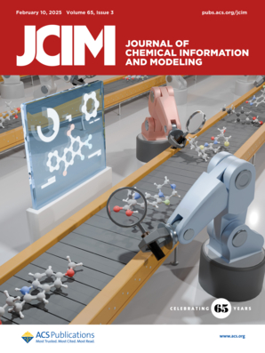
Cover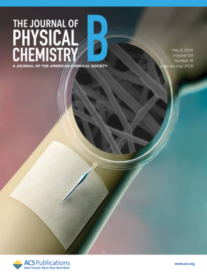
Cover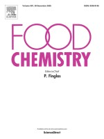
Cover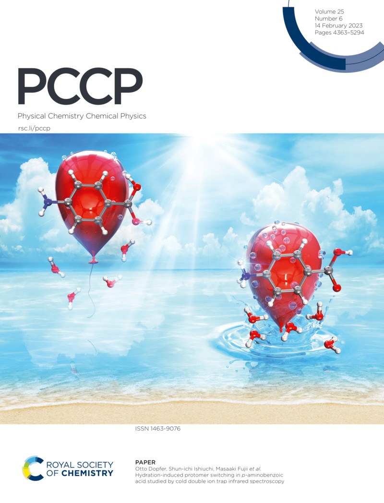
Cover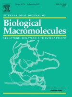
Cover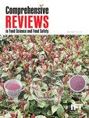
CoverJournal covers
Selected journal covers and representative publication venues highlighting research contributions in protein language models, molecular simulations, membrane biophysics, food protein science, computational chemistry, and AI-driven molecular discovery. Clicking a cover redirects to the corresponding journal or publication page.
J. Chem. Inf. Model.
pLM4CPPs for cell penetrating peptides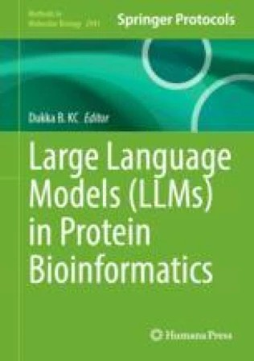
Methods in Molecular Biology
UniDL4BioPep for bioactive peptide predictionsJ. Phys. Chem. B
Selectivity of Snakin-Z against microbial membranes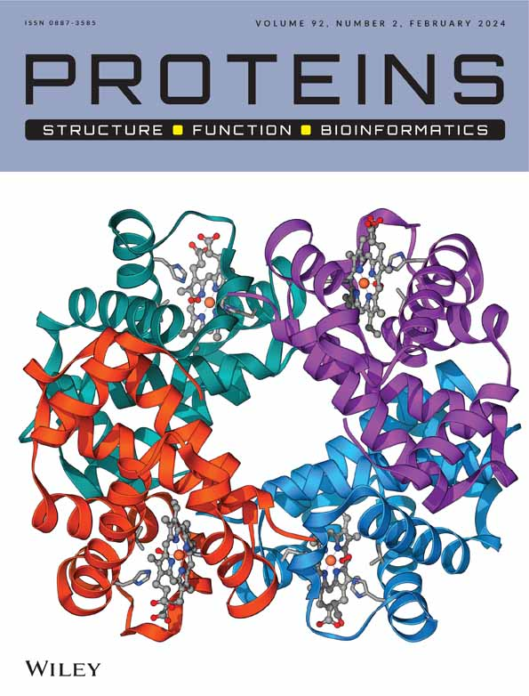
Proteins
Database for mining cation-aromatic interactions in proteinsFood Chemistry
Multiscale modeling of α-Gliadin, Ovalbumin proteins · NIR-MLPhys. Chem. Chem. Phys.
Development of parameters for non-covalent intteractionsInt. J. Biol. Macromol.
Database for mining aromatic-aromatic interactions in proteins · modeling of myofibrillar protein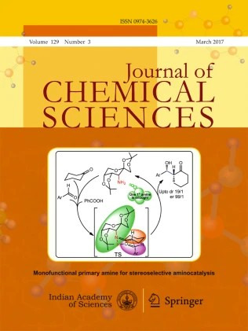
J Chem Sci
perspective on the nature of cation-π interactions, development of MPDS-TB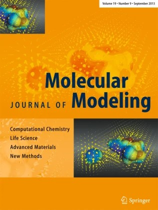
J Mol Model
Modeling and simulation for herbicide discovery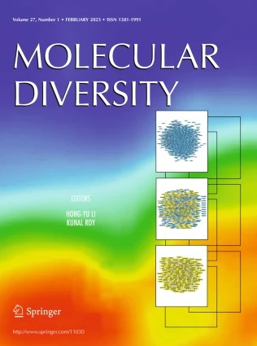
Molecular Diversity
Development of MPDS modules such as compound and fragment library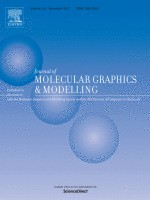
J. Mol. Graph. Model.
Lipid heterogeneity simulations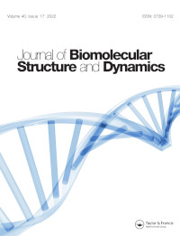
J. Biomol. Struct. Dyn.
Drug repurposingGigabyte
Molecular Property Diagnostic Suite for COVID-19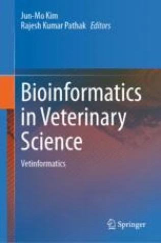
Methods and Protocols in Food Science
MD simulations for veterinary drugsCompr. Rev. Food Sci. Food Saf.
Chickpea review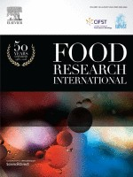
Food Research International
Ovalbumin allergenicity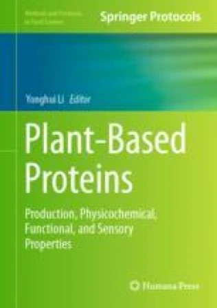
Methods and Protocols in Food Science
Free amino and sulfhydryl group content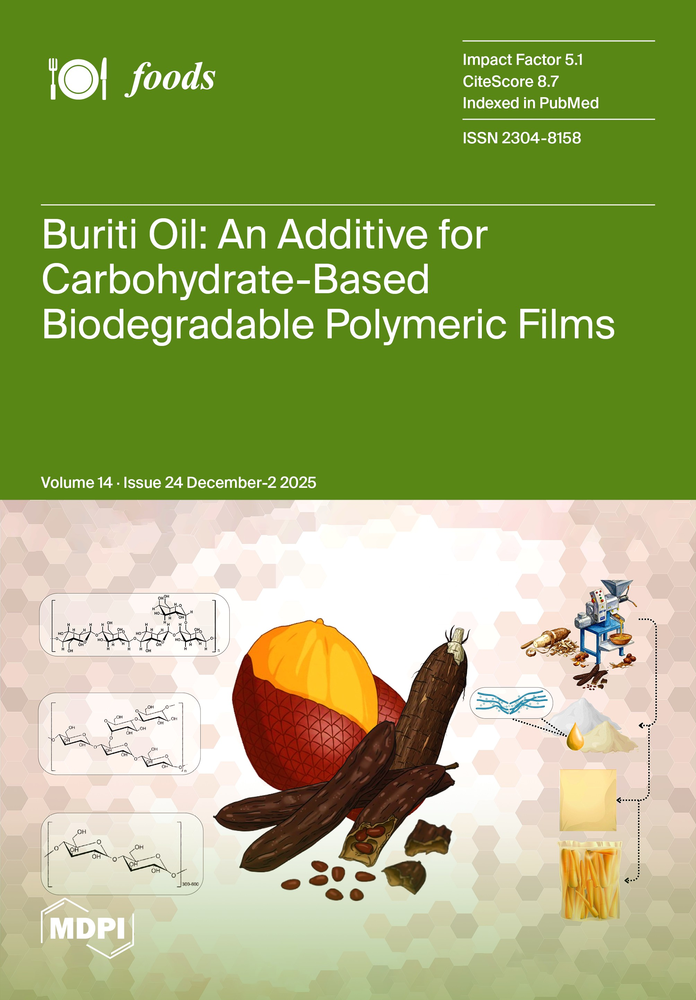
Foods
Frozen dough cryoprotection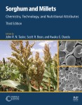
Sorghum and Millets
Protein chemistry, structure and functional properties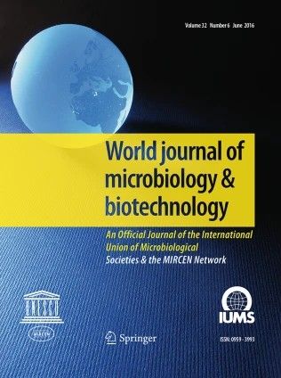
World J Microbiol Biotechnol
DFT for Characterizing arsenic tolerance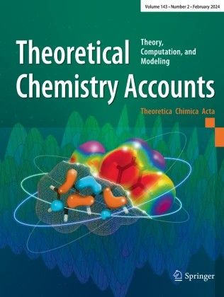
Theor Chem Acc
Solvation of metal ions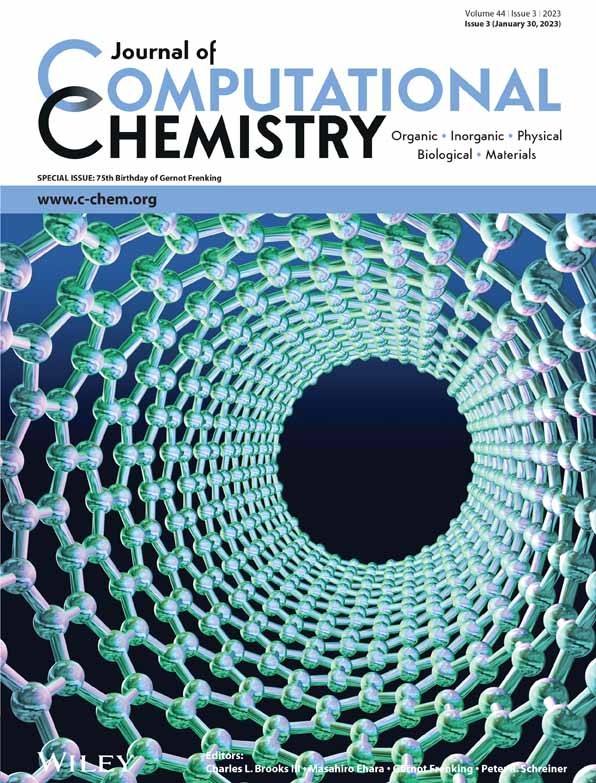
J Comput Chem
Binding propensity and selectivity of ionsFrontiers in Chemistry
Metal ion water interactions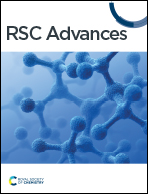